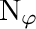

|
.
v1.2.7
|
|
.
v1.2.7
|
| Dependencies | None |
|---|---|
| CMakeLists.txt | set( PLUGINS "stomatalconductance" ) |
| Header File | #include "StomatalConductanceModel.h" |
| Class | StomatalConductanceModel |
| Constructors |
|---|
| StomatalConductanceModel( helios::Context* ) |
| Primitive Data Label | Symbol | Units | Data Type | Description | Available Plug-ins | Default Value |
|---|---|---|---|---|---|---|
| radiation_flux_PAR |  | W/m2 | float | PAR photon flux density | Can be computed by RadiationModel plug-in. | 0 |
| temperature |  | Kelvin | float | Primitive surface temperature. | Can be computed by EnergyBalanceModel plug-in. | 300 K |
| air_pressure |  | Pascals | float | Atmospheric pressure. | N/A | 101,000 Pa |
| air_temperature |  | Kelvin | float | Temperature of air outside of primitive boundary-layer. | N/A | 300 K |
| air_humidity |  | Unitless | float | Relative humidity of air outside of primitive boundary-layer. | N/A | 0.5 |
| boundarylayer_conductance |  | mol air/m2-s | float | Boundary-layer conductance to heat. | N/A | 0.1 mol/m2-s |
| Primitive Data Label | Symbol | Units | Data Type | Description |
|---|---|---|---|---|
| moisture_conductance |  | mol air/m2-sec | float | Conductance of water vapor through stomata. |
This plugin implements the stomatal conductance model of Buckley, Turnbill, and Adams (2012). Click here for the publication fully describing the model. A brief description is given in this documentation below.
Stomatal conductance is calculated using the following equation
![\[g_s = \frac{E_m(i+i_0)}{k+bi+(i+i_0)D}\]](form_167.png)
Variables in this equation are listed in this table:
| Variable | Units | Description |
|---|---|---|
| mol air/m2-s | Conductance of water vapor between substomatal cavity and just outside of stoma. | |
| |  mol photons/m2-s mol photons/m2-s | Photon flux density in photosynthetically active band. |
 | mmol water/mol air | Molar concentration of water vapor at leaf surface. |
There are four additional empirical parameters:  and
and  , which are further described below.
, which are further described below.
The vapor pressure deficit is calculated based on the temperature of the leaf and air, the relative humidity of the air, and the atmospheric pressure
![\[D = \frac{e_s(T_s)-e_s(T_a)h}{p_{atm}},\]](form_170.png)
with  calculated according to the Tetens equation.
calculated according to the Tetens equation.
The model coefficients and are set using the structure BMFcoefficients. This structure has four member elements of type float (Em, i0, k, and b), each corresponding to the respective model coefficents ( and ). Default values are listed in the table below.
In order to modify model coefficients from the default values, one should 1) declare and instance of the BMFcoefficients structure, 2) modify the appropriate data elements of the data structure, and 3) pass the data structure to the StomatalConductanceModel::setModelCoefficients() function. Example code is given below
| Parameter | Units | Default Value |
|---|---|---|
 | mmol/m2-s | 7.0 |
 | mol/m2-s | 6.6 |
 | mol/m-2s-1 mmol mol-1 | 496 |
| | mmol/mol | 6.1 |
BMFcoefficients modelcoeffs;
modelcoeffs.Em = 9.3;
modelcoeffs.i0 = 5.3;
modelcoeffs.k = 672;
modelcoeffs.b = 6.7;There are two possible functions to run the model: one to run the model for all primitives in the Context (see StomatalConductanceModel::run()), and another to run the model only for a subset of primitives given their UUIDs (see StomatalConductanceModel::run( std::vector<uint> UUIDs )).
#include "Context.h"
#include "StomatalConductanceModel.h" using namespace helios; int main( void ){ context.addPatch( make_vec3(0,0,0), make_vec2(1,1) ); } 1.8.18
1.8.18